<!doctype html>
<meta charset="utf-8">
<title>Comparación de las líneas superiores del banner</title>
<style>
*{box-sizing:border-box}html,body{margin:0;background:#080b13;color:#e5edf9;font:14px system-ui,sans-serif}main{display:flex;gap:16px;padding:14px;flex-wrap:wrap}figure{margin:0}figcaption{padding:0 0 8px;color:#aab9d1}.crop{width:300px;height:100px;overflow:hidden;border:1px solid #26334d;border-radius:6px}.crop img{display:block;width:1672px;height:941px;max-width:none;transform:translate(0,-395px) scale(2);transform-origin:top left}
</style>
<main>
<figure><figcaption>Original raster · long cian / short violeta</figcaption><div class="crop"></div></figure>
<figure><figcaption>Desarrollo · intercambio sincronizado</figcaption><div class="crop"></div></figure>
</main>
